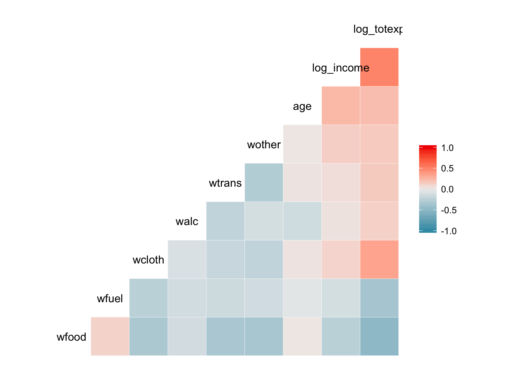
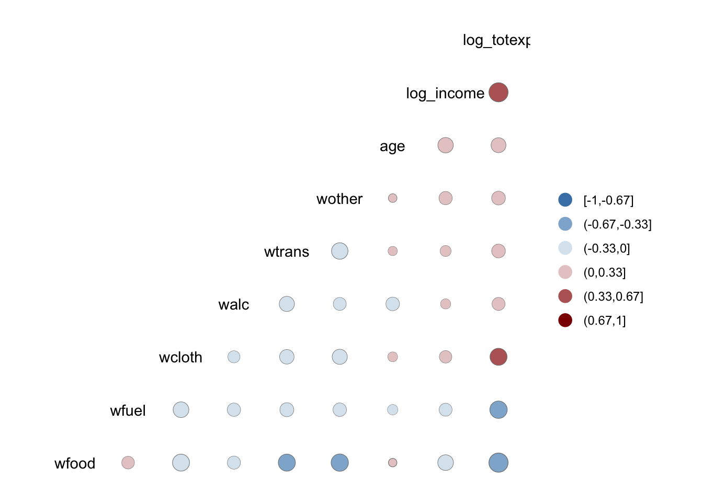
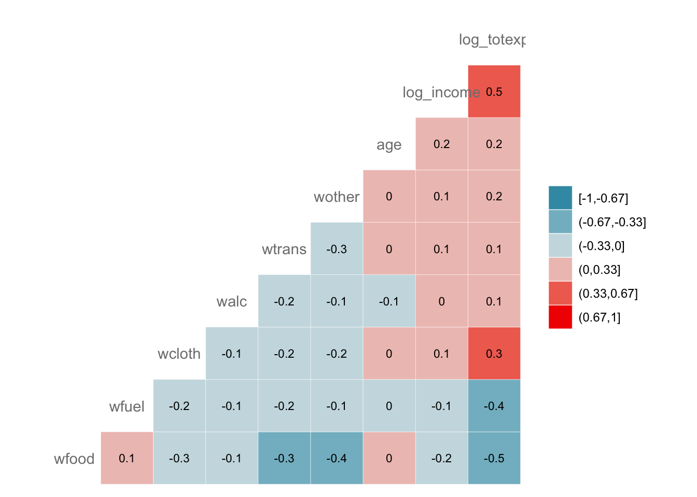
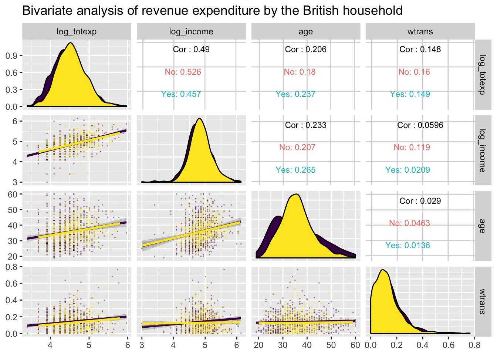
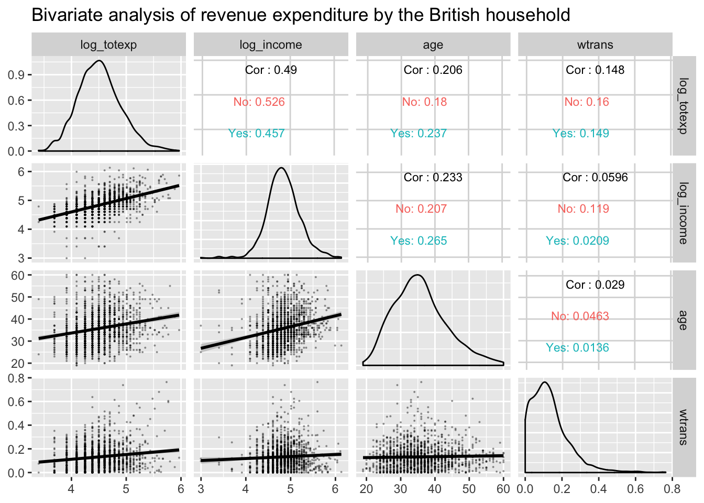

<!DOCTYPE html>

<html>

<head>

<meta charset="utf-8" />
<meta name="generator" content="pandoc" />
<meta http-equiv="X-UA-Compatible" content="IE=EDGE" />


<title>Lesson 17</title>

<script src="site_libs/jquery-1.11.3/jquery.min.js"></script>
<meta name="viewport" content="width=device-width, initial-scale=1" />
<link href="site_libs/bootstrap-3.3.5/css/flatly.min.css" rel="stylesheet" />
<script src="site_libs/bootstrap-3.3.5/js/bootstrap.min.js"></script>
<script src="site_libs/bootstrap-3.3.5/shim/html5shiv.min.js"></script>
<script src="site_libs/bootstrap-3.3.5/shim/respond.min.js"></script>
<script src="site_libs/jqueryui-1.11.4/jquery-ui.min.js"></script>
<link href="site_libs/tocify-1.9.1/jquery.tocify.css" rel="stylesheet" />
<script src="site_libs/tocify-1.9.1/jquery.tocify.js"></script>
<script src="site_libs/navigation-1.1/tabsets.js"></script>
<link href="site_libs/font-awesome-5.1.0/css/all.css" rel="stylesheet" />
<link href="site_libs/font-awesome-5.1.0/css/v4-shims.css" rel="stylesheet" />
<!DOCTYPE html PUBLIC "-//W3C//DTD HTML 4.01//EN" "http://www.w3.org/TR/html4/strict.dtd">
<html>
<head>
  <meta http-equiv="Content-Type" content="text/html; charset=utf-8">
  <meta http-equiv="Content-Style-Type" content="text/css">
  <title></title>
  <meta name="Generator" content="Cocoa HTML Writer">
  <meta name="CocoaVersion" content="1504">
  <!-- this script changes the anchor position -->
  <!-- http://jsfiddle.net/ianclark001/rkocah23/ -->
<script>
(function(document, history, location) {
  var HISTORY_SUPPORT = !!(history && history.pushState);

  var anchorScrolls = {
    ANCHOR_REGEX: /^#[^ ]+$/,
    OFFSET_HEIGHT_PX: 65,

    /**
     * Establish events, and fix initial scroll position if a hash is provided.
     */
    init: function() {
      this.scrollToCurrent();
      $(window).on('hashchange', $.proxy(this, 'scrollToCurrent'));
      $('body').on('click', 'a', $.proxy(this, 'delegateAnchors'));
    },

    /**
     * Return the offset amount to deduct from the normal scroll position.
     * Modify as appropriate to allow for dynamic calculations
     */
    getFixedOffset: function() {
      return this.OFFSET_HEIGHT_PX;
    },

    /**
     * If the provided href is an anchor which resolves to an element on the
     * page, scroll to it.
     * @param  {String} href
     * @return {Boolean} - Was the href an anchor.
     */
    scrollIfAnchor: function(href, pushToHistory) {
      var match, anchorOffset;

      if(!this.ANCHOR_REGEX.test(href)) {
        return false;
      }

      match = document.getElementById(href.slice(1));

      if(match) {
        anchorOffset = $(match).offset().top - this.getFixedOffset();
        $('html, body').animate({ scrollTop: anchorOffset});

        // Add the state to history as-per normal anchor links
        if(HISTORY_SUPPORT && pushToHistory) {
          history.pushState({}, document.title, location.pathname + href);
        }
      }

      return !!match;
    },
    
    /**
     * Attempt to scroll to the current location's hash.
     */
    scrollToCurrent: function(e) {
      if(this.scrollIfAnchor(window.location.hash) && e) {
        e.preventDefault();
      }
    },

    /**
     * If the click event's target was an anchor, fix the scroll position.
     */
    delegateAnchors: function(e) {
      var elem = e.target;

      if(this.scrollIfAnchor(elem.getAttribute('href'), true)) {
        e.preventDefault();
      }
    }
  };

    $(document).ready($.proxy(anchorScrolls, 'init'));
})(window.document, window.history, window.location);
</script>

</head>
<body>
</body>
</html>


<style type="text/css">code{white-space: pre;}</style>
<style type="text/css" data-origin="pandoc">
a.sourceLine { display: inline-block; line-height: 1.25; }
a.sourceLine { pointer-events: none; color: inherit; text-decoration: inherit; }
a.sourceLine:empty { height: 1.2em; }
.sourceCode { overflow: visible; }
code.sourceCode { white-space: pre; position: relative; }
div.sourceCode { margin: 1em 0; }
pre.sourceCode { margin: 0; }
@media screen {
div.sourceCode { overflow: auto; }
}
@media print {
code.sourceCode { white-space: pre-wrap; }
a.sourceLine { text-indent: -1em; padding-left: 1em; }
}
pre.numberSource a.sourceLine
  { position: relative; left: -4em; }
pre.numberSource a.sourceLine::before
  { content: attr(data-line-number);
    position: relative; left: -1em; text-align: right; vertical-align: baseline;
    border: none; pointer-events: all; display: inline-block;
    -webkit-touch-callout: none; -webkit-user-select: none;
    -khtml-user-select: none; -moz-user-select: none;
    -ms-user-select: none; user-select: none;
    padding: 0 4px; width: 4em;
    color: #aaaaaa;
  }
pre.numberSource { margin-left: 3em; border-left: 1px solid #aaaaaa;  padding-left: 4px; }
div.sourceCode
  {  }
@media screen {
a.sourceLine::before { text-decoration: underline; }
}
code span.al { color: #ff0000; font-weight: bold; } /* Alert */
code span.an { color: #60a0b0; font-weight: bold; font-style: italic; } /* Annotation */
code span.at { color: #7d9029; } /* Attribute */
code span.bn { color: #40a070; } /* BaseN */
code span.bu { } /* BuiltIn */
code span.cf { color: #007020; font-weight: bold; } /* ControlFlow */
code span.ch { color: #4070a0; } /* Char */
code span.cn { color: #880000; } /* Constant */
code span.co { color: #60a0b0; font-style: italic; } /* Comment */
code span.cv { color: #60a0b0; font-weight: bold; font-style: italic; } /* CommentVar */
code span.do { color: #ba2121; font-style: italic; } /* Documentation */
code span.dt { color: #902000; } /* DataType */
code span.dv { color: #40a070; } /* DecVal */
code span.er { color: #ff0000; font-weight: bold; } /* Error */
code span.ex { } /* Extension */
code span.fl { color: #40a070; } /* Float */
code span.fu { color: #06287e; } /* Function */
code span.im { } /* Import */
code span.in { color: #60a0b0; font-weight: bold; font-style: italic; } /* Information */
code span.kw { color: #007020; font-weight: bold; } /* Keyword */
code span.op { color: #666666; } /* Operator */
code span.ot { color: #007020; } /* Other */
code span.pp { color: #bc7a00; } /* Preprocessor */
code span.sc { color: #4070a0; } /* SpecialChar */
code span.ss { color: #bb6688; } /* SpecialString */
code span.st { color: #4070a0; } /* String */
code span.va { color: #19177c; } /* Variable */
code span.vs { color: #4070a0; } /* VerbatimString */
code span.wa { color: #60a0b0; font-weight: bold; font-style: italic; } /* Warning */

</style>
<script>
// apply pandoc div.sourceCode style to pre.sourceCode instead
(function() {
  var sheets = document.styleSheets;
  for (var i = 0; i < sheets.length; i++) {
    if (sheets[i].ownerNode.dataset["origin"] !== "pandoc") continue;
    try { var rules = sheets[i].cssRules; } catch (e) { continue; }
    for (var j = 0; j < rules.length; j++) {
      var rule = rules[j];
      // check if there is a div.sourceCode rule
      if (rule.type !== rule.STYLE_RULE || rule.selectorText !== "div.sourceCode") continue;
      var style = rule.style.cssText;
      // check if color or background-color is set
      if (rule.style.color === '' && rule.style.backgroundColor === '') continue;
      // replace div.sourceCode by a pre.sourceCode rule
      sheets[i].deleteRule(j);
      sheets[i].insertRule('pre.sourceCode{' + style + '}', j);
    }
  }
})();
</script>
<style type="text/css">
  pre:not([class]) {
    background-color: white;
  }
</style>


<style type="text/css">
h1 {
  font-size: 34px;
}
h1.title {
  font-size: 38px;
}
h2 {
  font-size: 30px;
}
h3 {
  font-size: 24px;
}
h4 {
  font-size: 18px;
}
h5 {
  font-size: 16px;
}
h6 {
  font-size: 12px;
}
.table th:not([align]) {
  text-align: left;
}
</style>

<link rel="stylesheet" href="style.css" type="text/css" />


<style type = "text/css">
.main-container {
  max-width: 940px;
  margin-left: auto;
  margin-right: auto;
}
code {
  color: inherit;
  background-color: rgba(0, 0, 0, 0.04);
}
img {
  max-width:100%;
}
.tabbed-pane {
  padding-top: 12px;
}
.html-widget {
  margin-bottom: 20px;
}
button.code-folding-btn:focus {
  outline: none;
}
summary {
  display: list-item;
}
</style>


<style type="text/css">
/* padding for bootstrap navbar */
body {
  padding-top: 60px;
  padding-bottom: 40px;
}
/* offset scroll position for anchor links (for fixed navbar)  */
.section h1 {
  padding-top: 65px;
  margin-top: -65px;
}
.section h2 {
  padding-top: 65px;
  margin-top: -65px;
}
.section h3 {
  padding-top: 65px;
  margin-top: -65px;
}
.section h4 {
  padding-top: 65px;
  margin-top: -65px;
}
.section h5 {
  padding-top: 65px;
  margin-top: -65px;
}
.section h6 {
  padding-top: 65px;
  margin-top: -65px;
}
.dropdown-submenu {
  position: relative;
}
.dropdown-submenu>.dropdown-menu {
  top: 0;
  left: 100%;
  margin-top: -6px;
  margin-left: -1px;
  border-radius: 0 6px 6px 6px;
}
.dropdown-submenu:hover>.dropdown-menu {
  display: block;
}
.dropdown-submenu>a:after {
  display: block;
  content: " ";
  float: right;
  width: 0;
  height: 0;
  border-color: transparent;
  border-style: solid;
  border-width: 5px 0 5px 5px;
  border-left-color: #cccccc;
  margin-top: 5px;
  margin-right: -10px;
}
.dropdown-submenu:hover>a:after {
  border-left-color: #ffffff;
}
.dropdown-submenu.pull-left {
  float: none;
}
.dropdown-submenu.pull-left>.dropdown-menu {
  left: -100%;
  margin-left: 10px;
  border-radius: 6px 0 6px 6px;
}
</style>

<script>
// manage active state of menu based on current page
$(document).ready(function () {
  // active menu anchor
  href = window.location.pathname
  href = href.substr(href.lastIndexOf('/') + 1)
  if (href === "")
    href = "index.html";
  var menuAnchor = $('a[href="' + href + '"]');

  // mark it active
  menuAnchor.parent().addClass('active');

  // if it's got a parent navbar menu mark it active as well
  menuAnchor.closest('li.dropdown').addClass('active');
});
</script>

<!-- tabsets -->

<style type="text/css">
.tabset-dropdown > .nav-tabs {
  display: inline-table;
  max-height: 500px;
  min-height: 44px;
  overflow-y: auto;
  background: white;
  border: 1px solid #ddd;
  border-radius: 4px;
}

.tabset-dropdown > .nav-tabs > li.active:before {
  content: "";
  font-family: 'Glyphicons Halflings';
  display: inline-block;
  padding: 10px;
  border-right: 1px solid #ddd;
}

.tabset-dropdown > .nav-tabs.nav-tabs-open > li.active:before {
  content: "&#xe258;";
  border: none;
}

.tabset-dropdown > .nav-tabs.nav-tabs-open:before {
  content: "";
  font-family: 'Glyphicons Halflings';
  display: inline-block;
  padding: 10px;
  border-right: 1px solid #ddd;
}

.tabset-dropdown > .nav-tabs > li.active {
  display: block;
}

.tabset-dropdown > .nav-tabs > li > a,
.tabset-dropdown > .nav-tabs > li > a:focus,
.tabset-dropdown > .nav-tabs > li > a:hover {
  border: none;
  display: inline-block;
  border-radius: 4px;
  background-color: transparent;
}

.tabset-dropdown > .nav-tabs.nav-tabs-open > li {
  display: block;
  float: none;
}

.tabset-dropdown > .nav-tabs > li {
  display: none;
}
</style>

<!-- code folding -->


<style type="text/css">

#TOC {
  margin: 25px 0px 20px 0px;
}
@media (max-width: 768px) {
#TOC {
  position: relative;
  width: 100%;
}
}

@media print {
.toc-content {
  /* see https://github.com/w3c/csswg-drafts/issues/4434 */
  float: right;
}
}

.toc-content {
  padding-left: 30px;
  padding-right: 40px;
}

div.main-container {
  max-width: 1200px;
}

div.tocify {
  width: 20%;
  max-width: 260px;
  max-height: 85%;
}

@media (min-width: 768px) and (max-width: 991px) {
  div.tocify {
    width: 25%;
  }
}

@media (max-width: 767px) {
  div.tocify {
    width: 100%;
    max-width: none;
  }
}

.tocify ul, .tocify li {
  line-height: 20px;
}

.tocify-subheader .tocify-item {
  font-size: 0.90em;
}

.tocify .list-group-item {
  border-radius: 0px;
}


</style>


</head>

<body>


<div class="container-fluid main-container">


<!-- setup 3col/9col grid for toc_float and main content  -->
<div class="row-fluid">
<div class="col-xs-12 col-sm-4 col-md-3">
<div id="TOC" class="tocify">
</div>
</div>

<div class="toc-content col-xs-12 col-sm-8 col-md-9">


<div class="navbar navbar-default  navbar-fixed-top" role="navigation">
  <div class="container">
    <div class="navbar-header">
      <button type="button" class="navbar-toggle collapsed" data-toggle="collapse" data-target="#navbar">
        <span class="icon-bar"></span>
        <span class="icon-bar"></span>
        <span class="icon-bar"></span>
      </button>
      <a class="navbar-brand" href="index.html">An R Tutorial for Beginners</a>
    </div>
    <div id="navbar" class="navbar-collapse collapse">
      <ul class="nav navbar-nav">
        <li>
  <a href="index.html">
    <span class="fa fa-home"></span>
     
    Home
  </a>
</li>
<li>
  <a href="about.html">
    <span class="fa fa-info-circle"></span>
     
    About
  </a>
</li>
<li class="dropdown">
  <a href="#" class="dropdown-toggle" data-toggle="dropdown" role="button" aria-expanded="false">
    <span class="fa fa-bars"></span>
     
    Lessons
     
    <span class="caret"></span>
  </a>
  <ul class="dropdown-menu" role="menu">
    <li class="dropdown-submenu">
      <a href="#" class="dropdown-toggle" data-toggle="dropdown" role="button" aria-expanded="false">Introduction</a>
      <ul class="dropdown-menu" role="menu">
        <li>
          <a href="R-course_lesson-1.html">Lesson 1</a>
        </li>
        <li>
          <a href="R-course_lesson-2.html">Lesson 2</a>
        </li>
        <li>
          <a href="R-course_lesson-3.html">Lesson 3</a>
        </li>
        <li>
          <a href="R-course_lesson-4.html">Lesson 4</a>
        </li>
      </ul>
    </li>
    <li class="dropdown-submenu">
      <a href="#" class="dropdown-toggle" data-toggle="dropdown" role="button" aria-expanded="false">Data Preparation</a>
      <ul class="dropdown-menu" role="menu">
        <li>
          <a href="R-course_lesson-5.html">Lesson 5</a>
        </li>
        <li>
          <a href="R-course_lesson-6.html">Lesson 6</a>
        </li>
        <li>
          <a href="R-course_lesson-7.html">Lesson 7</a>
        </li>
        <li>
          <a href="R-course_lesson-8.html">Lesson 8</a>
        </li>
        <li>
          <a href="R-course_lesson-9.html">Lesson 9</a>
        </li>
      </ul>
    </li>
    <li class="dropdown-submenu">
      <a href="#" class="dropdown-toggle" data-toggle="dropdown" role="button" aria-expanded="false">Programming</a>
      <ul class="dropdown-menu" role="menu">
        <li>
          <a href="R-course_lesson-10.html">Lesson 10</a>
        </li>
        <li>
          <a href="R-course_lesson-11.html">Lesson 11</a>
        </li>
        <li>
          <a href="R-course_lesson-12.html">Lesson 12</a>
        </li>
        <li>
          <a href="R-course_lesson-13.html">Lesson 13</a>
        </li>
        <li>
          <a href="R-course_lesson-14.html">Lesson 14</a>
        </li>
        <li>
          <a href="R-course_lesson-15.html">Lesson 15</a>
        </li>
        <li>
          <a href="R-course_lesson-16.html">Lesson 16</a>
        </li>
        <li>
          <a href="R-course_lesson-17.html">Lesson 17</a>
        </li>
      </ul>
    </li>
    <li class="dropdown-submenu">
      <a href="#" class="dropdown-toggle" data-toggle="dropdown" role="button" aria-expanded="false">Data Analysis</a>
      <ul class="dropdown-menu" role="menu">
        <li>
          <a href="R-course_lesson-18.html">Lesson 18</a>
        </li>
        <li>
          <a href="R-course_lesson-19.html">Lesson 19</a>
        </li>
        <li>
          <a href="R-course_lesson-20.html">Lesson 20</a>
        </li>
        <li>
          <a href="R-course_lesson-21.html">Lesson 21</a>
        </li>
      </ul>
    </li>
  </ul>
</li>
      </ul>
      <ul class="nav navbar-nav navbar-right">
        
      </ul>
    </div><!--/.nav-collapse -->
  </div><!--/.container -->
</div><!--/.navbar -->

<div class="fluid-row" id="header">


<h1 class="title toc-ignore">Correlation in R: Pearson &amp; Spearman with Matrix Example</h1>

</div>


<p>A bivariate relationship describes a relationship -or correlation- between two variables, and . In this tutorial, we discuss the concept of correlation and show how it can be used to measure the relationship between any two variables.</p>
<p>There are two primary methods to compute the correlation between two variables.</p>
<ul>
<li>Pearson: Parametric correlation</li>
<li>Spearman: Non-parametric correlation</li>
</ul>
<div id="pearson-correlation" class="section level1">
<h1>Pearson Correlation</h1>
<p>The Pearson correlation method is usually used as a primary check for the relationship between two variables.</p>
<p>The coefficient of correlation, , is a measure of the strength of the linear relationship between two variables and . It is computed as follow:</p>
<p><span class="math display">\[\rho = \frac{cov(x,y)}{\sigma_x\sigma_y}\]</span></p>
<p>with</p>
<p><span class="math inline">\(\sigma_x=\Sigma(x-\bar{x})^2\)</span>, i.e., standard deviation of the variable <span class="math inline">\(x\)</span> <span class="math inline">\(\sigma_y=\Sigma(y-\bar{y})^2\)</span>, i.e., standard deviation of the variable <span class="math inline">\(y\)</span></p>
<p>The correlation ranges between -1 and 1.</p>
<ul>
<li>A value of near or equal to 0 implies little or no linear relationship between <span class="math inline">\(x\)</span> and <span class="math inline">\(y\)</span>.</li>
<li>In contrast, the closer comes to 1 or -1, the stronger the linear relationship.</li>
</ul>
<p>We can compute the t-test as follow and check the distribution table with a degree of freedom equals to:</p>
<p><span class="math display">\[t=\frac{\rho}{\sqrt{1-\rho^2}}\sqrt{n-2}\]</span></p>
</div>
<div id="spearman-rank-correlation" class="section level1">
<h1>Spearman Rank Correlation</h1>
<p>A rank correlation sorts the observations by rank and computes the level of similarity between the rank. A rank correlation has the advantage of being robust to outliers and is not linked to the distribution of the data. Note that, a rank correlation is suitable for the ordinal variable.</p>
<p>Spearman’s rank correlation is always between -1 and 1 with a value close to the extremity indicates strong relationship. It is computed as follow:</p>
<p><span class="math display">\[\rho = \frac{cov(rg_x,rg_y)}{\sigma_{rg_x}\sigma_{rg_y}}\]</span></p>
<p>with stated the covariances between ranks. The denominator calculates the standard deviations.</p>
<p>In R, we can use the cor() function. It takes three arguments, , and the method.</p>
<div class="sourceCode" id="cb1"><pre class="sourceCode r"><code class="sourceCode r"><a class="sourceLine" id="cb1-1" data-line-number="1"><span class="kw">cor</span>(x, y, method)</a></code></pre></div>
<p><strong>Arguments:</strong></p>
<ul>
<li>x: First vector</li>
<li>y: Second vector</li>
<li>method: The formula used to compute the correlation. Three string values:
<ul>
<li>“pearson”</li>
<li>“kendall”</li>
<li>“spearman”</li>
</ul></li>
</ul>
<p>An optional argument can be added if the vectors contain missing value: use = “complete.obs”</p>
<p>We will use the BudgetUK dataset. This dataset reports the budget allocation of British households between 1980 and 1982. There are 1519 observations with ten features, among them:</p>
<ul>
<li>wfood: share food share spend</li>
<li>wfuel: share fuel spend</li>
<li>wcloth: budget share for clothing spend</li>
<li>walc: share alcohol spend</li>
<li>wtrans: share transport spend</li>
<li>wother: share of other goods spend</li>
<li>totexp: total household spend in pound</li>
<li>income total net household income</li>
<li>age: age of household</li>
<li>children: number of children</li>
</ul>
<div class="sourceCode" id="cb2"><pre class="sourceCode r"><code class="sourceCode r"><a class="sourceLine" id="cb2-1" data-line-number="1"><span class="kw">library</span>(dplyr)</a>
<a class="sourceLine" id="cb2-2" data-line-number="2">PATH &lt;-<span class="st">&quot;https://raw.githubusercontent.com/guru99-edu/R-Programming/master/british_household.csv&quot;</span></a>
<a class="sourceLine" id="cb2-3" data-line-number="3">data &lt;-<span class="st"> </span><span class="kw">read.csv</span>(PATH) <span class="op">%&gt;%</span></a>
<a class="sourceLine" id="cb2-4" data-line-number="4"><span class="st">  </span><span class="kw">filter</span>(income <span class="op">&lt;</span><span class="st"> </span><span class="dv">500</span>) <span class="op">%&gt;%</span></a>
<a class="sourceLine" id="cb2-5" data-line-number="5"><span class="st">  </span><span class="kw">mutate</span>(<span class="dt">log_income =</span> <span class="kw">log</span>(income),</a>
<a class="sourceLine" id="cb2-6" data-line-number="6">         <span class="dt">log_totexp =</span> <span class="kw">log</span>(totexp),</a>
<a class="sourceLine" id="cb2-7" data-line-number="7">         <span class="dt">children_fac =</span> <span class="kw">factor</span>(children, <span class="dt">order =</span> <span class="ot">TRUE</span>, <span class="dt">labels =</span> <span class="kw">c</span>(<span class="st">&quot;No&quot;</span>, <span class="st">&quot;Yes&quot;</span>))) <span class="op">%&gt;%</span></a>
<a class="sourceLine" id="cb2-8" data-line-number="8"><span class="st">  </span><span class="kw">select</span>(<span class="op">-</span><span class="kw">c</span>(X, children, totexp, income))</a>
<a class="sourceLine" id="cb2-9" data-line-number="9"><span class="kw">glimpse</span>(data)</a></code></pre></div>
<pre><code>## Observations: 1,516
## Variables: 10
## $ wfood        &lt;dbl&gt; 0.4272, 0.3739, 0.1941, 0.4438, 0.3331, 0.3752, 0.2568, …
## $ wfuel        &lt;dbl&gt; 0.1342, 0.1686, 0.4056, 0.1258, 0.0824, 0.0481, 0.0909, …
## $ wcloth       &lt;dbl&gt; 0.0000, 0.0091, 0.0012, 0.0539, 0.0399, 0.1170, 0.0453, …
## $ walc         &lt;dbl&gt; 0.0106, 0.0825, 0.0513, 0.0397, 0.1571, 0.0210, 0.0153, …
## $ wtrans       &lt;dbl&gt; 0.1458, 0.1215, 0.2063, 0.0652, 0.2403, 0.0955, 0.0227, …
## $ wother       &lt;dbl&gt; 0.2822, 0.2444, 0.1415, 0.2716, 0.1473, 0.3431, 0.5689, …
## $ age          &lt;int&gt; 25, 39, 47, 33, 31, 24, 46, 25, 30, 41, 48, 24, 28, 31, …
## $ log_income   &lt;dbl&gt; 4.867534, 5.010635, 5.438079, 4.605170, 4.605170, 4.2484…
## $ log_totexp   &lt;dbl&gt; 3.912023, 4.499810, 5.192957, 4.382027, 4.499810, 4.2484…
## $ children_fac &lt;ord&gt; Yes, Yes, Yes, Yes, No, No, No, No, No, No, Yes, No, Yes…</code></pre>
<p><strong>Code Explanation</strong></p>
<ul>
<li>We first import the data and have a look with the glimpse() function from the dplyr library.</li>
<li>Three points are above 500K, so we decided to exclude them.</li>
<li>It is a common practice to convert a monetary variable in log. It helps to reduce the impact of outliers and decreases the skewness in the dataset.</li>
</ul>
<p>We can compute the correlation coefficient between income and wfood variables with the “pearson” and “spearman” methods.</p>
<div class="sourceCode" id="cb4"><pre class="sourceCode r"><code class="sourceCode r"><a class="sourceLine" id="cb4-1" data-line-number="1"><span class="kw">cor</span>(data<span class="op">$</span>log_income, data<span class="op">$</span>wfood, <span class="dt">method =</span> <span class="st">&quot;pearson&quot;</span>)</a></code></pre></div>
<pre><code>## [1] -0.2466986</code></pre>
<div class="sourceCode" id="cb6"><pre class="sourceCode r"><code class="sourceCode r"><a class="sourceLine" id="cb6-1" data-line-number="1"><span class="kw">cor</span>(data<span class="op">$</span>log_income, data<span class="op">$</span>wfood, <span class="dt">method =</span> <span class="st">&quot;spearman&quot;</span>)</a></code></pre></div>
<pre><code>## [1] -0.2501252</code></pre>
</div>
<div id="correlation-matrix" class="section level1">
<h1>Correlation Matrix</h1>
<p>The bivariate correlation is a good start, but we can get a broader picture with multivariate analysis. A correlation with many variables is pictured inside a <strong>correlation matrix</strong>. A correlation matrix is a matrix that represents the pair correlation of all the variables.</p>
<p>The cor() function returns a correlation matrix. The only difference with the bivariate correlation is we don’t need to specify which variables. By default, R computes the correlation between all the variables.</p>
<p>Note that, a correlation cannot be computed for factor variable. We need to make sure we drop categorical feature before we pass the data frame inside cor().</p>
<p>A correlation matrix is symmetrical which means the values above the diagonal have the same values as the one below. It is more visual to show half of the matrix.</p>
<p>We exclude children_fac because it is a factor level variable. cor does not perform correlation on a categorical variable.</p>
<div class="sourceCode" id="cb8"><pre class="sourceCode r"><code class="sourceCode r"><a class="sourceLine" id="cb8-1" data-line-number="1"><span class="co"># the last column of data is a factor level. We don&#39;t include it in the code</span></a>
<a class="sourceLine" id="cb8-2" data-line-number="2">mat_<span class="dv">1</span> &lt;-<span class="st"> </span><span class="kw">as.dist</span>(<span class="kw">round</span>(<span class="kw">cor</span>(data[,<span class="dv">1</span><span class="op">:</span><span class="dv">9</span>]), <span class="dv">2</span>))</a>
<a class="sourceLine" id="cb8-3" data-line-number="3">mat_<span class="dv">1</span></a></code></pre></div>
<pre><code>##            wfood wfuel wcloth  walc wtrans wother   age log_income
## wfuel       0.11                                                  
## wcloth     -0.33 -0.25                                            
## walc       -0.12 -0.13  -0.09                                     
## wtrans     -0.34 -0.16  -0.19 -0.22                               
## wother     -0.35 -0.14  -0.22 -0.12  -0.29                        
## age         0.02 -0.05   0.04 -0.14   0.03   0.02                 
## log_income -0.25 -0.12   0.10  0.04   0.06   0.13  0.23           
## log_totexp -0.50 -0.36   0.34  0.12   0.15   0.15  0.21       0.49</code></pre>
<p><strong>Code Explanation</strong></p>
<ul>
<li>cor(data): Display the correlation matrix</li>
<li>round(data, 2): Round the correlation matrix with two decimals</li>
<li>as.dist(): Shows the second half only</li>
</ul>
</div>
<div id="significance-level" class="section level1">
<h1>Significance level</h1>
<p>The significance level is useful in some situations when we use the pearson or spearman method. The function rcorr() from the library Hmisc computes for us the p-value. We can download the library with <code>install.packages(&quot;Hmisc&quot;)</code>.</p>
<p>The rcorr() requires a data frame to be stored as a matrix. We can convert our data into a matrix before to compute the correlation matrix with the p-value.</p>
<div class="sourceCode" id="cb10"><pre class="sourceCode r"><code class="sourceCode r"><a class="sourceLine" id="cb10-1" data-line-number="1"><span class="kw">library</span>(<span class="st">&quot;Hmisc&quot;</span>)</a>
<a class="sourceLine" id="cb10-2" data-line-number="2">data_rcorr &lt;-<span class="st"> </span><span class="kw">as.matrix</span>(data[, <span class="dv">1</span><span class="op">:</span><span class="dv">9</span>])</a>
<a class="sourceLine" id="cb10-3" data-line-number="3"></a>
<a class="sourceLine" id="cb10-4" data-line-number="4">mat_<span class="dv">2</span> &lt;-<span class="st"> </span><span class="kw">rcorr</span>(data_rcorr)</a>
<a class="sourceLine" id="cb10-5" data-line-number="5"><span class="co"># mat_2 &lt;- rcorr(as.matrix(data)) returns the same output</span></a></code></pre></div>
<p>The list object mat_2 contains three elements:</p>
<ul>
<li>r: Output of the correlation matrix</li>
<li>n: Number of observation</li>
<li>P: p-value</li>
</ul>
<p>We are interested in the third element, the p-value. It is common to show the correlation matrix with the p-value instead of the coefficient of correlation.</p>
<div class="sourceCode" id="cb11"><pre class="sourceCode r"><code class="sourceCode r"><a class="sourceLine" id="cb11-1" data-line-number="1">p_value &lt;-<span class="st"> </span><span class="kw">round</span>(mat_<span class="dv">2</span>[[<span class="st">&quot;P&quot;</span>]], <span class="dv">3</span>)</a>
<a class="sourceLine" id="cb11-2" data-line-number="2">p_value</a></code></pre></div>
<pre><code>##            wfood wfuel wcloth  walc wtrans wother   age log_income log_totexp
## wfood         NA 0.000  0.000 0.000  0.000  0.000 0.365      0.000          0
## wfuel      0.000    NA  0.000 0.000  0.000  0.000 0.076      0.000          0
## wcloth     0.000 0.000     NA 0.001  0.000  0.000 0.160      0.000          0
## walc       0.000 0.000  0.001    NA  0.000  0.000 0.000      0.105          0
## wtrans     0.000 0.000  0.000 0.000     NA  0.000 0.259      0.020          0
## wother     0.000 0.000  0.000 0.000  0.000     NA 0.355      0.000          0
## age        0.365 0.076  0.160 0.000  0.259  0.355    NA      0.000          0
## log_income 0.000 0.000  0.000 0.105  0.020  0.000 0.000         NA          0
## log_totexp 0.000 0.000  0.000 0.000  0.000  0.000 0.000      0.000         NA</code></pre>
<p><strong>Code Explanation</strong></p>
<ul>
<li>mat_2[[“P”]]: The p-values are stored in the element called P</li>
<li>round(mat_2[[“P”]], 3): Round the elements with three digits</li>
</ul>
</div>
<div id="visualize-correlation-matrix" class="section level1">
<h1>Visualize Correlation Matrix</h1>
<p>A heat map is another way to show a correlation matrix. The GGally library is an extension of ggplot2. Currently, it is not available in the conda library. We can install directly in the console. <code>install.packages(&quot;GGally&quot;)</code>.</p>
<p>The library includes different functions to show the summary statistics such as the correlation and distribution of all the variables in a matrix.</p>
<p>The ggcorr() function has lots of arguments. We will introduce only the arguments we will use in the tutorial:</p>
<div id="the-function-ggcorr" class="section level2">
<h2>The function ggcorr</h2>
<div class="sourceCode" id="cb13"><pre class="sourceCode r"><code class="sourceCode r"><a class="sourceLine" id="cb13-1" data-line-number="1"><span class="kw">ggcorr</span>(df, <span class="dt">method =</span> <span class="kw">c</span>(<span class="st">&quot;pairwise&quot;</span>, <span class="st">&quot;pearson&quot;</span>),</a>
<a class="sourceLine" id="cb13-2" data-line-number="2">  <span class="dt">nbreaks =</span> <span class="ot">NULL</span>, <span class="dt">digits =</span> <span class="dv">2</span>, <span class="dt">low =</span> <span class="st">&quot;#3B9AB2&quot;</span>,</a>
<a class="sourceLine" id="cb13-3" data-line-number="3">  <span class="dt">mid =</span> <span class="st">&quot;#EEEEEE&quot;</span>, <span class="dt">high =</span> <span class="st">&quot;#F21A00&quot;</span>,</a>
<a class="sourceLine" id="cb13-4" data-line-number="4">  <span class="dt">geom =</span> <span class="st">&quot;tile&quot;</span>, <span class="dt">label =</span> <span class="ot">FALSE</span>,</a>
<a class="sourceLine" id="cb13-5" data-line-number="5">  <span class="dt">label_alpha =</span> <span class="ot">FALSE</span>)</a></code></pre></div>
<p><strong>Arguments:</strong></p>
<ul>
<li>df: Dataset used</li>
<li>method: Formula to compute the correlation. By default, pairwise and Pearson are computed</li>
<li>nbreaks: Return a categorical range for the coloration of the coefficients. By default, no break and the color gradient is continuous</li>
<li>digits: Round the correlation coefficient. By default, set to 2</li>
<li>low: Control the lower level of the coloration</li>
<li>mid: Control the middle level of the coloration</li>
<li>high: Control the high level of the coloration</li>
<li>geom: Control the shape of the geometric argument. By default, “tile”</li>
<li>label: Boolean value. Display or not the label. By default, set to <code>FALSE</code></li>
</ul>
</div>
</div>
<div id="basic-heat-map" class="section level1">
<h1>Basic heat map</h1>
<p>The most basic plot of the package is a heat map. The legend of the graph shows a gradient color from - 1 to 1, with hot color indicating strong positive correlation and cold color, a negative correlation.</p>
<div class="sourceCode" id="cb14"><pre class="sourceCode r"><code class="sourceCode r"><a class="sourceLine" id="cb14-1" data-line-number="1"><span class="kw">library</span>(GGally)</a>
<a class="sourceLine" id="cb14-2" data-line-number="2"><span class="kw">ggcorr</span>(data)</a></code></pre></div>
<p></p>
<p><strong>Code Explanation</strong></p>
<ul>
<li>ggcorr(data): Only one argument is needed, which is the data frame name. Factor level variables are not included in the plot.</li>
</ul>
<div id="add-control-to-the-heat-map" class="section level3">
<h3>Add control to the heat map</h3>
<p>We can add more controls to the graph.</p>
<div class="sourceCode" id="cb15"><pre class="sourceCode r"><code class="sourceCode r"><a class="sourceLine" id="cb15-1" data-line-number="1"><span class="kw">ggcorr</span>(data,</a>
<a class="sourceLine" id="cb15-2" data-line-number="2">    <span class="dt">nbreaks =</span> <span class="dv">6</span>,</a>
<a class="sourceLine" id="cb15-3" data-line-number="3">    <span class="dt">low =</span> <span class="st">&quot;steelblue&quot;</span>,</a>
<a class="sourceLine" id="cb15-4" data-line-number="4">    <span class="dt">mid =</span> <span class="st">&quot;white&quot;</span>,</a>
<a class="sourceLine" id="cb15-5" data-line-number="5">    <span class="dt">high =</span> <span class="st">&quot;darkred&quot;</span>,</a>
<a class="sourceLine" id="cb15-6" data-line-number="6">    <span class="dt">geom =</span> <span class="st">&quot;circle&quot;</span>)</a></code></pre></div>
<p></p>
<p><strong>Code Explanation</strong></p>
<ul>
<li>nbreaks = 6: break the legend with 6 ranks.</li>
<li>low = “steelblue”: Use lighter colors for negative correlation</li>
<li>mid = “white”: Use white colors for middle ranges correlation</li>
<li>high = “darkred”: Use dark colors for positive correlation</li>
<li>geom = “circle”: Use circle as the shape of the windows in the heat map. The size of the circle is proportional to the absolute value of the correlation.</li>
</ul>
</div>
<div id="add-label-to-the-heat-map" class="section level3">
<h3>Add label to the heat map</h3>
<p>GGally allows us to add a label inside the windows.</p>
<div class="sourceCode" id="cb16"><pre class="sourceCode r"><code class="sourceCode r"><a class="sourceLine" id="cb16-1" data-line-number="1"><span class="kw">ggcorr</span>(data,</a>
<a class="sourceLine" id="cb16-2" data-line-number="2">    <span class="dt">nbreaks =</span> <span class="dv">6</span>,</a>
<a class="sourceLine" id="cb16-3" data-line-number="3">    <span class="dt">label =</span> <span class="ot">TRUE</span>,</a>
<a class="sourceLine" id="cb16-4" data-line-number="4">    <span class="dt">label_size =</span> <span class="dv">3</span>,</a>
<a class="sourceLine" id="cb16-5" data-line-number="5">    <span class="dt">color =</span> <span class="st">&quot;grey50&quot;</span>)</a></code></pre></div>
<p></p>
<p><strong>Code Explanation</strong></p>
<ul>
<li>label = TRUE: Add the values of the coefficients of correlation inside the heat map.</li>
<li>color = “grey50”: Choose the color, i.e. grey</li>
<li>label_size = 3: Set the size of the label equals to 3</li>
</ul>
</div>
<div id="ggpairs" class="section level2">
<h2>ggpairs</h2>
<p>Finally, we introduce another function from the GGaly library. Ggpair. It produces a graph in a matrix format. We can display three kinds of computation within one graph. The matrix is a dimension, with equals the number of observations. The upper/lower part displays windows and in the diagonal. We can control what information we want to show in each part of the matrix. The formula for ggpair is:</p>
<div class="sourceCode" id="cb17"><pre class="sourceCode r"><code class="sourceCode r"><a class="sourceLine" id="cb17-1" data-line-number="1"><span class="kw">ggpair</span>(df, <span class="dt">columns =</span> <span class="dv">1</span><span class="op">:</span><span class="st"> </span><span class="kw">ncol</span>(df), <span class="dt">title =</span> <span class="ot">NULL</span>,</a>
<a class="sourceLine" id="cb17-2" data-line-number="2">    <span class="dt">upper =</span> <span class="kw">list</span>(<span class="dt">continuous =</span> <span class="st">&quot;cor&quot;</span>),</a>
<a class="sourceLine" id="cb17-3" data-line-number="3">    <span class="dt">lower =</span> <span class="kw">list</span>(<span class="dt">continuous =</span> <span class="st">&quot;smooth&quot;</span>),</a>
<a class="sourceLine" id="cb17-4" data-line-number="4">    <span class="dt">mapping =</span> <span class="ot">NULL</span>)     </a></code></pre></div>
<p><strong>Arguments:</strong></p>
<ul>
<li>df: Dataset used</li>
<li>columns: Select the columns to draw the plot</li>
<li>title: Include a title</li>
<li>upper: Control the boxes above the diagonal of the plot. Need to supply the type of computations or graph to return. If continuous = “cor”, we ask R to compute the correlation. Note that, the argument needs to be a list. Other arguments can be used, see the <a href="%22http://ggobi.github.io/ggally/#custom_functions%22">vignette</a> for more information.</li>
<li>Lower: Control the boxes below the diagonal.</li>
<li>Mapping: Indicates the aesthetic of the graph. For instance, we can compute the graph for different groups.</li>
</ul>
</div>
<div id="bivariate-analysis-with-ggpair-with-grouping" class="section level2">
<h2>Bivariate analysis with ggpair with grouping</h2>
<p>The next graph plots three information:</p>
<ul>
<li>The correlation matrix between log_totexp, log_income, age and wtrans variable grouped by whether the household has a kid or not.</li>
<li>Plot the distribution of each variable by group</li>
<li>Display the scatter plot with the trend by group</li>
</ul>
<div class="sourceCode" id="cb18"><pre class="sourceCode r"><code class="sourceCode r"><a class="sourceLine" id="cb18-1" data-line-number="1"><span class="kw">library</span>(ggplot2)</a>
<a class="sourceLine" id="cb18-2" data-line-number="2"><span class="kw">ggpairs</span>(data, <span class="dt">columns =</span> <span class="kw">c</span>(<span class="st">&quot;log_totexp&quot;</span>, <span class="st">&quot;log_income&quot;</span>, <span class="st">&quot;age&quot;</span>, <span class="st">&quot;wtrans&quot;</span>), <span class="dt">title =</span> <span class="st">&quot;Bivariate analysis of revenue expenditure by the British household&quot;</span>, <span class="dt">upper =</span> <span class="kw">list</span>(<span class="dt">continuous =</span> <span class="kw">wrap</span>(<span class="st">&quot;cor&quot;</span>,</a>
<a class="sourceLine" id="cb18-3" data-line-number="3">        <span class="dt">size =</span> <span class="dv">3</span>)),</a>
<a class="sourceLine" id="cb18-4" data-line-number="4">    <span class="dt">lower =</span> <span class="kw">list</span>(<span class="dt">continuous =</span> <span class="kw">wrap</span>(<span class="st">&quot;smooth&quot;</span>,</a>
<a class="sourceLine" id="cb18-5" data-line-number="5">        <span class="dt">alpha =</span> <span class="fl">0.3</span>,</a>
<a class="sourceLine" id="cb18-6" data-line-number="6">        <span class="dt">size =</span> <span class="fl">0.1</span>)),</a>
<a class="sourceLine" id="cb18-7" data-line-number="7">    <span class="dt">mapping =</span> <span class="kw">aes</span>(<span class="dt">color =</span> children_fac))</a></code></pre></div>
<p></p>
<p><strong>Code Explanation</strong></p>
<ul>
<li>columns = c(“log_totexp”, “log_income”, “age”, “wtrans”): Choose the variables to show in the graph</li>
<li>title = “Bivariate analysis of revenue expenditure by the British household”: Add a title</li>
<li>upper = list(): Control the upper part of the graph. I.e. Above the diagonal</li>
<li>continuous = wrap(“cor”, size = 3)): Compute the coefficient of correlation. We wrap the argument continuous inside the wrap() function to control for the aesthetic of the graph ( i.e. size = 3) -lower = list(): Control the lower part of the graph. I.e. Below the diagonal.</li>
<li>continuous = wrap(“smooth”,alpha = 0.3,size=0.1): Add a scatter plot with a linear trend. We wrap the argument continuous inside the wrap() function to control for the aesthetic of the graph ( i.e. size=0.1, alpha=0.3)</li>
<li>mapping = aes(color = children_fac): We want each part of the graph to be stacked by the variable children_fac, which is a categorical variable taking the value of 1 if the household does not have kids and 2 otherwise</li>
</ul>
</div>
<div id="bivariate-analysis-with-ggpair-with-partial-grouping" class="section level2">
<h2>Bivariate analysis with ggpair with partial grouping</h2>
<p>The graph below is a little bit different. We change the position of the mapping inside the upper argument.</p>
<div class="sourceCode" id="cb19"><pre class="sourceCode r"><code class="sourceCode r"><a class="sourceLine" id="cb19-1" data-line-number="1"><span class="kw">ggpairs</span>(data, <span class="dt">columns =</span> <span class="kw">c</span>(<span class="st">&quot;log_totexp&quot;</span>, <span class="st">&quot;log_income&quot;</span>, <span class="st">&quot;age&quot;</span>, <span class="st">&quot;wtrans&quot;</span>),</a>
<a class="sourceLine" id="cb19-2" data-line-number="2">    <span class="dt">title =</span> <span class="st">&quot;Bivariate analysis of revenue expenditure by the British household&quot;</span>,</a>
<a class="sourceLine" id="cb19-3" data-line-number="3">    <span class="dt">upper =</span> <span class="kw">list</span>(<span class="dt">continuous =</span> <span class="kw">wrap</span>(<span class="st">&quot;cor&quot;</span>,</a>
<a class="sourceLine" id="cb19-4" data-line-number="4">            <span class="dt">size =</span> <span class="dv">3</span>),</a>
<a class="sourceLine" id="cb19-5" data-line-number="5">        <span class="dt">mapping =</span> <span class="kw">aes</span>(<span class="dt">color =</span> children_fac)),</a>
<a class="sourceLine" id="cb19-6" data-line-number="6">    <span class="dt">lower =</span> <span class="kw">list</span>(</a>
<a class="sourceLine" id="cb19-7" data-line-number="7">        <span class="dt">continuous =</span> <span class="kw">wrap</span>(<span class="st">&quot;smooth&quot;</span>,</a>
<a class="sourceLine" id="cb19-8" data-line-number="8">            <span class="dt">alpha =</span> <span class="fl">0.3</span>,</a>
<a class="sourceLine" id="cb19-9" data-line-number="9">            <span class="dt">size =</span> <span class="fl">0.1</span>))</a>
<a class="sourceLine" id="cb19-10" data-line-number="10">)</a></code></pre></div>
<p></p>
<p><strong>Code Explanation</strong></p>
<p>Exact same code as previous example except for: mapping = aes(color = children_fac): Move the list in upper = list(). We only want the computation stacked by group in the upper part of the graph.</p>
</div>
</div>
<div id="summary" class="section level1">
<h1>Summary</h1>
<p>We can summarize the function in the table below:</p>
<table>
<thead>
<tr class="header">
<th align="left">library</th>
<th align="left">Objective</th>
<th align="left">method</th>
<th align="left">code</th>
</tr>
</thead>
<tbody>
<tr class="odd">
<td align="left">Base</td>
<td align="left">bivariate correlation</td>
<td align="left">Pearson</td>
<td align="left">cor(dfx2, method = “pearson”)</td>
</tr>
<tr class="even">
<td align="left"></td>
<td align="left">bivariate correlation</td>
<td align="left">Spearman</td>
<td align="left">cor(dfx2, method = “spearman”)</td>
</tr>
<tr class="odd">
<td align="left"></td>
<td align="left">Multivariate correlation</td>
<td align="left">Pearson</td>
<td align="left">cor(df, method = “pearson”)</td>
</tr>
<tr class="even">
<td align="left"></td>
<td align="left">Multivariate correlation</td>
<td align="left">Spearman</td>
<td align="left">cor(df, method = “spearman”)</td>
</tr>
<tr class="odd">
<td align="left">Hmisc</td>
<td align="left">P value</td>
<td align="left"></td>
<td align="left">rcorr(as.matrix(data[,1:9]))[[“P”]]</td>
</tr>
<tr class="even">
<td align="left">Ggally</td>
<td align="left">heat map</td>
<td align="left"></td>
<td align="left">ggcorr(df)</td>
</tr>
<tr class="odd">
<td align="left"></td>
<td align="left">Multivariate plots</td>
<td align="left"></td>
<td align="left">ggpairs(df)</td>
</tr>
</tbody>
</table>
</div>

&nbsp;
<hr />
<p style="text-align: center;">A work by <a href="https://www.unipa.it/persone/docenti/s/gianluca.sottile">Gianluca Sottile</a></p>
<p style="text-align: center;"><span style="color: #808080;"><em>gianluca.sottile@unipa.it</em></span></p>

<!-- Add icon library -->
<link rel="stylesheet" href="https://cdnjs.cloudflare.com/ajax/libs/font-awesome/4.7.0/css/font-awesome.min.css">

&nbsp;


</div>
</div>

</div>

<script>

// add bootstrap table styles to pandoc tables
function bootstrapStylePandocTables() {
  $('tr.header').parent('thead').parent('table').addClass('table table-condensed');
}
$(document).ready(function () {
  bootstrapStylePandocTables();
});


</script>

<!-- tabsets -->

<script>
$(document).ready(function () {
  window.buildTabsets("TOC");
});

$(document).ready(function () {
  $('.tabset-dropdown > .nav-tabs > li').click(function () {
    $(this).parent().toggleClass('nav-tabs-open')
  });
});
</script>

<!-- code folding -->

<script>
$(document).ready(function ()  {

    // move toc-ignore selectors from section div to header
    $('div.section.toc-ignore')
        .removeClass('toc-ignore')
        .children('h1,h2,h3,h4,h5').addClass('toc-ignore');

    // establish options
    var options = {
      selectors: "h1,h2",
      theme: "bootstrap3",
      context: '.toc-content',
      hashGenerator: function (text) {
        return text.replace(/[.\\/?&!#<>]/g, '').replace(/\s/g, '_').toLowerCase();
      },
      ignoreSelector: ".toc-ignore",
      scrollTo: 0
    };
    options.showAndHide = true;
    options.smoothScroll = true;

    // tocify
    var toc = $("#TOC").tocify(options).data("toc-tocify");
});
</script>

<!-- dynamically load mathjax for compatibility with self-contained -->
<script>
  (function () {
    var script = document.createElement("script");
    script.type = "text/javascript";
    script.src  = "https://mathjax.rstudio.com/latest/MathJax.js?config=TeX-AMS-MML_HTMLorMML";
    document.getElementsByTagName("head")[0].appendChild(script);
  })();
</script>

</body>
</html>
